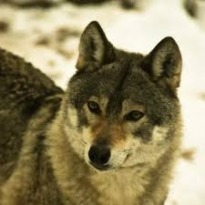

Lobo italiano
 En Italia, la población de lobos está creciendo, pero los ganaderos presionan para que se autorice su eliminación, lo que representa una amenaza para la especie, aunque el lobo está protegido por leyes nacionales y europeas.
Amenazas
Las principales amenazas para la especie son la persecución directa (veneno, lazos, disparo, etc.) y la fragmentación del territorio.